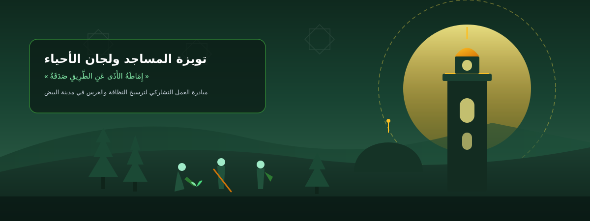

المبادرات التطوعية وحملات "التويزة" المبرمجة
تنظيم وتوحيد الجهود الميدانية لجمعيات المجتمع المدني والمواطنين بالتنسيق مع المصالح العمومية

ميثاق الإحسان الحضري وتويزة المساجد ولجان الأحياء
تأصيل العمل البيئي كقيمة إيمانية وسنة نبوية راسخة تعزز التضامن الجواري في مدينة البيض
الأصول الشرعية والسنن النبوية في طهارة المحيط والغرس
إماطة الأذى شعبة من شعب الإيمان
قال رسول الله ﷺ: «الإيمانُ بضعٌ وسبعونَ شُعبةً، فأفضلُها قولُ لا إله إلا الله، وأدناها إماطةُ الأذى عن الطريق».صحيح مسلم
الغرس والتشجير صدقة جارية ونماء للأرض
قال رسول الله ﷺ: «ما من مسلمٍ يَغرِسُ غَرْسًا، أو يَزرَعُ زَرْعًا، فيأكُلُ منه طيرٌ أو إنسانٌ أو بهيمةٌ، إلا كان له به صدقةٌ».متفق عليه
الإحسان في الفضاء العام ومغفرة الذنوب
قال رسول الله ﷺ: «بينما رجلٌ يَمشي بطريقٍ وَجَدَ غُصْنَ شَوْكٍ على الطريقِ فأخَّرَه، فشَكَرَ اللهُ له فَغَفَرَ له».صحيح البخاري
بروتوكول "تويزة المسجد والحي" للتوعية والعمل الميداني
1. المنبر المسجدي والتوعية في خطب الجمعة
تخصيص أئمة المساجد حيزاً من خطبة الجمعة أو الدروس الجوارية لحث المصلين على ترشيد النظافة أمام البيوت وصيانة المرافق العامة كواجب ديني وأخلاقي.
2. حملات "طهارة المحيط" بعد صلاة الفجر والجمعة
تنسيق لجان الأحياء وشباب المسجد لتنظيم انطلاقات ميدانية دورية (ساعة واحدة من العمل التشاركي) لرفع الأكياس وكنس محيط المسجد والساحات المجاورة.
3. مبادرة "الوقف الأخضر" وتبني الشجيرات
تشجيع المحسنين والعائلات على غرس شجيرات صنوبر أو بطم أمام المنازل وتعهدها بالسقي كصدقة جارية مأجورة عن الوالدين وعن الموتى.
أداة توليد ملصق الإعلان المسجدي والجداري (A4 Printable)
مولد فوري لملصق الإعلان عن المبادرة التطوعية لتعليقه في لوحة إعلانات المسجد والمحلات الجوارية أو مشاركته عبر WhatsApp
الجمهورية الجزائرية الديمقراطية الشعبية
ولاية البيض | بلدية البيض | مبادرة التويزة التشاركية «بيّضها»
حملة التويزة الكبرى: تنظيف وتشجير محيط الحي
ميثاق الجوار النظيف وحسن المعاشرة الحضرية
احترام مواعيد مرور شاحنات جمع النفايات المنزلية ووضع الأكياس محكمة الإغلاق.
الامتناع التام عن رمي مخلفات البناء والردام في مجاري الأودية والساحات العمومية.
المحافظة على الحاويات البلدية ونظافة واجهات المنازل والمحلات التجارية.
المشاركة الفعالة في مبادرات "التويزة" الدورية كحق من حقوق الجوار الصالح.
سجل التحول والارتقاء البيئي (قبل / بعد)
توثيق ميداني مصور للفضاءات المسترجعة بفضل تظافر جهود المتطوعين والمؤسسات العمومية
التنسيق المؤسساتي والوقاية العامة
تكامل العمل التطوعي للمجتمع المدني مع المخططات البلدية والولائية للنظافة وحماية البيئة
المجلس الشعبي البلدي لبلدية البيض
تسخير شاحنات النقل والعتاد الثقيل نحو مركز الردم التقني للنفايات (CET)، وتوفير حاويات جمع القمامة.
محافظة الغابات لولاية البيض
توفير الشتلات المتأقلمة مع المناخ القاري (الصنوبر الحلبي، البطم الأطلسي) والتأطير التقني لعمليات التشجير ومكافحة التصحر.
مديرية الحماية المدنية لولاية البيض
تأمين سلامة المتطوعين والإشراف على تنقية مجاري الأودية ونقاط تجمع المياه تفادياً لمخاطر الفيضانات الموسمية.
مصالح الأمن والدرك الوطنيين والصحة العمومية
تنظيم الحملات التحسيسية للوقاية من الآفات الاجتماعية، السلامة المرورية، وحماية الصحة العامة.
دليل السلامة الميدانية وحسن التدبير البيئي
قواعد السلامة والوقاية الشخصية
إلزامية ارتداء قفازات عمل واقية وأحذية صلبة، وتفادي التقاط النفايات الحادة أو الزجاجية باليدين المجردتين.
الفرز الانتقائي للمخلفات
عزل المواد البلاستيكية والكرتون في أكياس مخصصة لتسهيل عمليات الفرز وتوجيهها نحو مسالك الاسترجاع والرسكلة.
المعايير التقنية للغرس في الوسط السهبي
اعتماد الأصناف المقاومة للجفاف والبرودة القارصة، مع تهيئة أحواض سقي مقعرة لتجميع مياه السيلان الطبيعي.